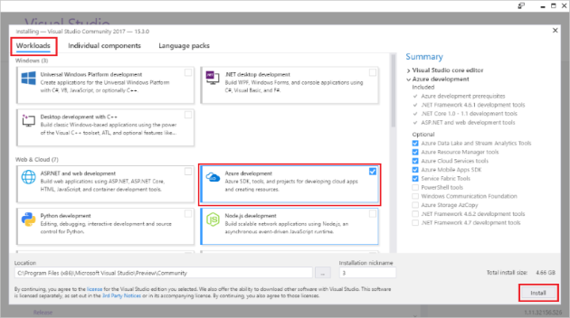
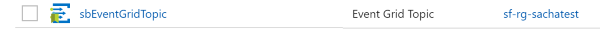
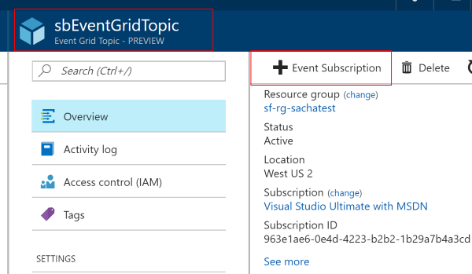
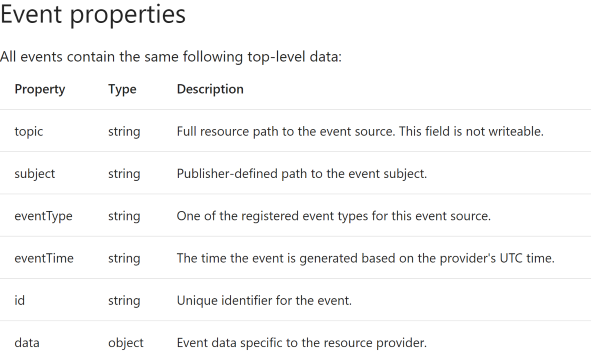
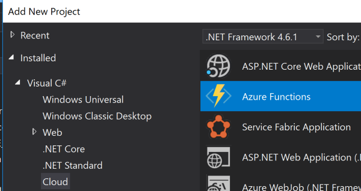
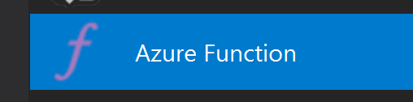
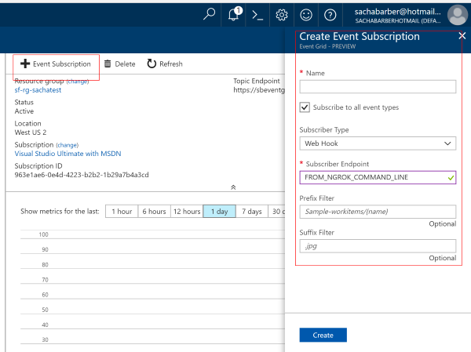
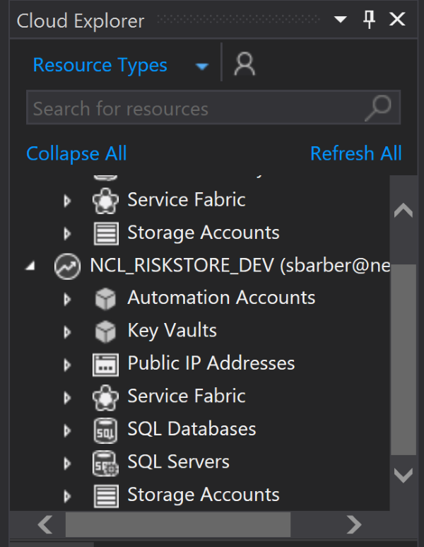
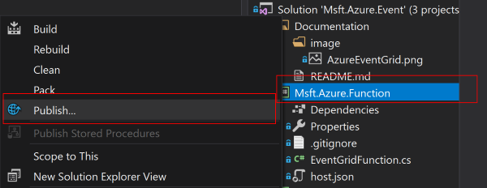

In this article we will explore the idea of Servless computing via the use of Azure Functions which I will wire up to a Azure Event Grid custom event to do some work. The demo itself is nothing special but by the end of this article I would hope you would be able to craft your own events, and understand what could be done with Azure Functions.
What if you could spend all your time building and deploying great
apps, and none of your time managing servers? Serverless computing lets you do
just that because the infrastructure you need to run and scale your apps is
managed for you. Focus your efforts on your business. Redirect resources from
infrastructure management into innovating and bringing apps to market faster.
Serverless computing is the abstraction of servers, infrastructure and
operating systems. When you build serverless apps you don�t need to provision
and manage any servers, so you can take your mind off infrastructure concerns.
Serverless computing is driven by the reaction to events and triggers happening
in near-real time in the cloud. As a fully managed service, server management
and capacity planning are invisible to the developer and billing is based just
on resources consumed or the actual time your code is running.
Taken from https://azure.microsoft.com/en-gb/overview/serverless-computing/ up on date 06/12/17
The code for this article can be found here : https://github.com/sachabarber/msft-azureeventgrid
Azure Functions Tools is included in the Azure development workload of Visual Studio 2017 version 15.4, or a later version. Make sure you include the Azure development workload in your Visual Studio 2017 installation:

To create and deploy functions, you also need:
See this page for more details : https://docs.microsoft.com/en-us/azure/azure-functions/functions-develop-vs
Azure Functions is a solution for easily running small pieces of code, or "functions," in the cloud. You can write just the code you need for the problem at hand, without worrying about a whole application or the infrastructure to run it.
https://docs.microsoft.com/en-us/azure/azure-functions/functions-overview up on date : 06/12/17
Azure functions come with quite a few hooks to various other services in Azure, for example there is support for these servies that could trigger your Azure Function code:
I am a massive fan of Rx and reactive programming as a whole, and for me Azure Functions also allow that type of react mindset. You send out an event, and the Azure function subscribes and does something when the event occurs. This is very easy to reason about, and you can have many isolated/self contained functions all doing their own little bit of the puzzle, all backed up by the Azure platform for scalability
The EventGrid is the new kid on the block (at time of writing anyway), and this is what Microsoft have to say about it on the home page for EventGrid "Build reactive, event-driven apps with a fully managed event routing service. Create richer app scenarios by connecting serverless logic to events from multiple sources."
So why should we use him and not some of the already existing messaging systems like ServiceBus/EventHub?
I stumbled apon a great post that goes through exactly that, which I am going to extract from and reference here
Azure Service Bus
When you have a shopping cart, when you�re buying stuff, and when you�re moving money or material you would probably use Azure Service Bus because you want transactions, you want instantaneous consistency, you want to be able to have temporal control like if this is not processed in x amount of minutes then dead letter it or send it somewhere else for an escalation. When you want these kinds of orchestrated (workflow) stuff to do state transitions then you�ll be using Azure Service Bus. It�s really like IBM MQ or BizTalk Server, however at cloud scale. In a nutshell, when you need robustness and cannot afford to lose any messages, you�ll go for Azure Service Bus.
Azure Event Grid
When you�re actually shipping and moving stuff, where you are reacting to things like item has been pulled from the shelf, item was bought to postal area, item has been shipped, or this shipment was rejected and so on, in this case instead of doing a central control workflow you would do in an Event based model running active workflows for each product item. Here you are reacting to real changes in real time. Azure Event Grid is ideal for these kinds of reactive scenarios.
Azure Event Hub
Azure Event Hub is used more for the telemetry scenarios. Let�s say if
every component that�s been used in the Enterprise for this e-commerce
application emits telemetry data like Log4Net or Log4J and you wanted to capture
it, then you�ll use Azure Event Hub. A great example is Azure Application
Insight, under the hood it uses Azure Event Hub to capture the telemetry
information.
Hope this helps to clarify the need for 3 different
messaging platforms in Microsoft Azure and when to use them appropriately.
All this comes from this great post : https://www.servicebus360.com/blogs/azure-service-bus-event-hub-event-grid-one-choose up on date 06/12/17
Ok so now enough of the theory, what are we going to demo. Well its actually fairly simple, we will provision a new EventGrid in Azure, and then create a Azure Function subscriber who will react to a custom event that a Console Application will send from on premise to the Auzre hosted EventGrid.
That's it. Oh but we would like to be able to debug the local Console Application and the Azure function locally using Visual Studio before we publish the Azure Function to Azure.
Simply requirements I am sure you will agree.
Before we can do anything we need an actual EventGrid in Azure,
so you will need an ACTIVE Azure account. If you have one of
these its simply a matter of using the portal to create a new EventGrid topic.
CLICK FOR BIGGER IMAGE
This will take a while to provision. But when it finally is provisioned you should see something like this in the portal.

If you click this one of the things you can add Event Subscription.
Which allows you to wire up the EventGrid to other components that will react to
the messages pumped through the EventGrid

We will come back to this Event Subscription area when we look at the Azure function in a minute
When using the Azure EventGrid you can't just push out any old payload there is a set schema for the messages, which you can read about here
https://docs.microsoft.com/en-us/azure/event-grid/event-schema
The following diagram illustrates the schema

So does that mean we can't send our own data?
No not at all, you simply have to ensure that the overall message schema
adheres to that specified above. Your custom data would do in the datafield.
Here is the message for this demo app that is used by both the Azure EventGrid and the Azure Function.
//generic wrapper for Azure EventGrid custom event
public class CustomEvent<T>
{
public string Id { get; private set; }
public string EventType { get; set; }
public string Subject { get; set; }
public string EventTime { get; private set; }
public T Data { get; set; }
public CustomEvent()
{
Id = Guid.NewGuid().ToString();
DateTime localTime = DateTime.Now;
DateTime utcTime = DateTime.UtcNow;
DateTimeOffset localTimeAndOffset =
new DateTimeOffset(localTime, TimeZoneInfo.Local.GetUtcOffset(localTime));
EventTime = localTimeAndOffset.ToString("o");
}
}
//This is the data that will end up in the "data" field of the CustomEvent in this small demo
public class Account
{
public string Name { get; set; }
public string Gender { get; set; }
}
This is also a pretty important bit of information
Events are sent to Azure Event Grid in an array, which can contain multiple event objects. If there is only a single event, the array has a length of 1. The array can have a total size of up to 1 MB. Each event in the array is limited to 64 KB.
Ok so now we know how to provision an EventGrid and we know what
the messages look like, how do we send messages to the EventGrid we
have provisioned?
Well that part is actually very easy we can use a simple Console Application
(or whatever you like), and just make sure you have a Nuget/hard reference to
Newtonsoft.Json (or you own favourite JSON library)
We can then simply use code like this
using Msft.Event.Core;
using Newtonsoft.Json;
using System;
using System.Collections.Generic;
using System.Net.Http;
using System.Text;
using System.Threading.Tasks;
namespace Msft.Event
{
class Program
{
static void Main(string[] args)
{
{
var eventNew = MakeRequestEvent();
eventNew.Wait();
Console.WriteLine(eventNew.Result.Content.ReadAsStringAsync().Result);
}
Console.ReadKey();
}
private static async Task<HttpResponseMessage> MakeRequestEvent()
{
string endpoint = "https://YOUR_ENDPOINT_HERE.westus2-1.eventgrid.azure.net/api/events";
var httpClient = new HttpClient();
httpClient.DefaultRequestHeaders.Add("aeg-sas-key", "YOUR_KEY_HERE");
List<CustomEvent<Account>> events = new List<CustomEvent<Account>>();
var customEvent = new CustomEvent<Account>();
customEvent.EventType = "TestType";
customEvent.Subject = "Test";
customEvent.Data = new Account() { Name = "Maik", Gender = "Male" };
events.Add(customEvent);
string jsonContent = JsonConvert.SerializeObject(events);
Console.WriteLine(jsonContent);
var content = new StringContent(jsonContent, Encoding.UTF8, "application/json");
return await httpClient.PostAsync(endpoint, content);
}
}
}
Where you would need to find the following values from your own Azure EventGrid using the portal
These can be found in the EventGrid blade in the portal
CLICK FOR BIGGER IMAGE
So now onto the Azure Function. This is also fairly straight forward, we simply create a new Azure Functions project in Visual Studio (if you don't see this you may have to run the Visual Studio Installer and make sure you have the Azure wokflow element selected)

So once you have a new Azure Functions project, you can add a new Azure Function to it by right clicking the project and choosing add new item as shown below

When you are asked choose the following options
After that you should see this starter code
using System.Linq;
using System.Net;
using System.Net.Http;
using System.Threading.Tasks;
using Microsoft.Azure.WebJobs;
using Microsoft.Azure.WebJobs.Extensions.Http;
using Microsoft.Azure.WebJobs.Host;
namespace Msft.Azure.Function
{
public static class Function1
{
[FunctionName("Function1")]
public static async Task<HttpResponseMessage> Run(
[HttpTrigger(AuthorizationLevel.Anonymous, "get", "post", Route = null)]HttpRequestMessage req, TraceWriter log)
{
log.Info("C# HTTP trigger function processed a request.");
// parse query parameter
string name = req.GetQueryNameValuePairs()
.FirstOrDefault(q => string.Compare(q.Key, "name", true) == 0)
.Value;
// Get request body
dynamic data = await req.Content.ReadAsAsync<object>();
// Set name to query string or body data
name = name ?? data?.name;
return name == null
? req.CreateResponse(HttpStatusCode.BadRequest, "Please pass a name on the query string or in the request body")
: req.CreateResponse(HttpStatusCode.OK, "Hello " + name);
}
}
}
Which is a fine place to start, but we want to get our function to talk to the EventGrid. So lets see what the finished product looks like for the demo code, which is as shown below
using System.Collections.Generic;
using System.IO;
using System.Linq;
using System.Net;
using System.Net.Http;
using System.Threading.Tasks;
using Microsoft.Azure.WebJobs;
using Microsoft.Azure.WebJobs.Extensions.Http;
using Microsoft.Azure.WebJobs.Host;
using Msft.Event.Core;
using Newtonsoft.Json;
using Newtonsoft.Json.Linq;
namespace Msft.Azure.Function
{
public static class EventGridFunction
{
//https://blogs.msdn.microsoft.com/brandonh/2017/11/30/locally-debugging-an-azure-function-triggered-by-azure-event-grid/
//https://docs.microsoft.com/en-us/azure/event-grid/security-authentication#webhook-event-delivery
[FunctionName("EventGridFunction")]
public static async Task<HttpResponseMessage> Run(
[HttpTrigger(AuthorizationLevel.Anonymous, "get", "post", Route = null)]HttpRequestMessage req, TraceWriter log)
{
var payloadFromEventGrid = JToken.ReadFrom(new JsonTextReader(new StreamReader(await req.Content.ReadAsStreamAsync())));
dynamic eventGridSoleItem = (payloadFromEventGrid as JArray)?.SingleOrDefault();
if (eventGridSoleItem == null)
{
return req.CreateErrorResponse(HttpStatusCode.BadRequest, $@"Expecting only one item in the Event Grid message");
}
if (eventGridSoleItem.eventType == @"Microsoft.EventGrid.SubscriptionValidationEvent")
{
log.Verbose(@"Event Grid Validation event received.");
return new HttpResponseMessage(HttpStatusCode.OK)
{
Content = new StringContent(JsonConvert.SerializeObject(new
{
validationResponse = ((dynamic)payloadFromEventGrid)[0].data.validationCode
}))
};
}
log.Info("C# HTTP trigger function processed a request.");
// Get request body
string data = await req.Content.ReadAsStringAsync();
var theEvents = JsonConvert.DeserializeObject<List<CustomEvent<Account>>>(data);
//TODO : handle the events in some way here
return new HttpResponseMessage(HttpStatusCode.OK)
{
Content = new StringContent(JsonConvert.SerializeObject(new
{
status = "good"
}))
};
}
}
}
Now there is a fair bit more going on there, what is all that?
Well this is due to how the subscription between the EventGrid
and Azure Function need to work together. Your Function needs to
properly handle the SubscriptionValidationEvent sent out by Event
Grid when a subscription endpoint is created. You can read more about this
here
In fact I did not come up with this, when I was finding out how to do this, I came across this great post by one of the chaps at Microsoft that got me most of the way there : https://blogs.msdn.microsoft.com/brandonh/2017/11/30/locally-debugging-an-azure-function-triggered-by-azure-event-grid/
So now we have all the peices to the puzzle we want to test it out right? So
lets think about that we have a local Console Application publishing events to
an Azure hosted EventGrid, and we want to use a local Azure
Function inside Visual Studio to subscribe to events from the Azure hosted EventGrid. So how will that work?
Luckily on the post I link to above Brandon talks about a neat tool called
ngrok which allows a TCP tunnel to be opened up and gives you a nice endpoint
uri that you can then use to set in the Azure portal for the EventGridsubscription pointing to the local Azure Function for testing purposes.
When launching ngrok, you have the option of specifying the port it forwards to locally. For .Net Azure Functions this is, by default, 7071 so you need to give that to ngrok when you run it
This is all you need to run (in a command/PowerShell window) once you have installed ngrok
ngrok http -host-header=localhost 7071
But be careful
The ngrok command you run is session based, when the command window you used to run the
ngrok command dies so does that endpoint, and you will need to
run the command again, and update the Azure portal EventGrid subscription to the new
HTTPS uri if you close the command window.
Don't forget to have your function running locally when you create the subscription, as this is needed to get the correct 200 OK back with the right payload, otherwise the EventGrid will error out and will fail to create the subscription for you and you'll have to do it again.
With all that in place ALL you now need to do is enter the correct endpoint (the HTTPS one from the ngrok command line) information into the Azure EventGrid subscriptions area
CLICK FOR BIGGER IMAGE
Ok now with all that in place you should be able to run the following from the demo project together
And that should just work
One final note is
To publish the Azure function from Visual Studio you will need an ACTIVE Azure account. Once you have that setup in Visual Studio you should be able to see it in the Azure Cloud Explorer (under the View Menu).
Here is my work one

So one you have that publishing to Azure is fairly straight forward, simply pick the Azure Function project, right click it and choose the Publish menu

Then you should choose a new profile, where you should choose Azure Function App then click the publish button from the dialog
CLICK FOR BIGGER IMAGE
Once this has successfully published to Azure you will need to get the
endpoint for the function, and update the subscription associated with EventGrid such that the REAL cloud based Azure
Function is called for any new event pumped out through the EventGrid. You would grab the endpoint of the Azure Function App, and then
go and update the EventGrid subscription in much the same way you did above for
a localhost test, but you would now use the real address that you got from the
Azure portal for the Azure Function App
I quite like using Azure functions for small discrete bits of work, I would not use them everywhere, in fact we don't anywhere we need long running workers, we are leaning towards the Azure Service Fabric for that type of thing. However you simply can't overlook just how easy it is to use Azure Functions, and just how many hooks there are to support them.
They are worth consideration in any fture architecture you look at if you are using Azure.